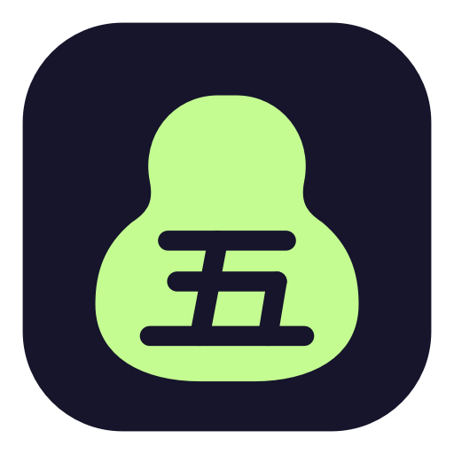

;
分号选第二项
86 五笔键名汉字固定排在第二候选，按分号即可选择。

WA 五笔任选一个键名键，连按四次，再按 ;
—网页练习 · 按键仅在本页处理
86 五笔键名汉字固定排在第二候选，按分号即可选择。
点按 Shift 即可切换中英。启用语音后，按住 Control + Shift 录音，松手自动转写。
调节透明度和字号，选择横排或竖排。候选窗随光标移动，并适配系统明暗外观。
导入搜狗细胞词库、Rime 码表和常用文本词表。通过 iCloud Drive 同步词库、候选排序和输入设置，开启时可选合并或直接采用 iCloud 的内容。